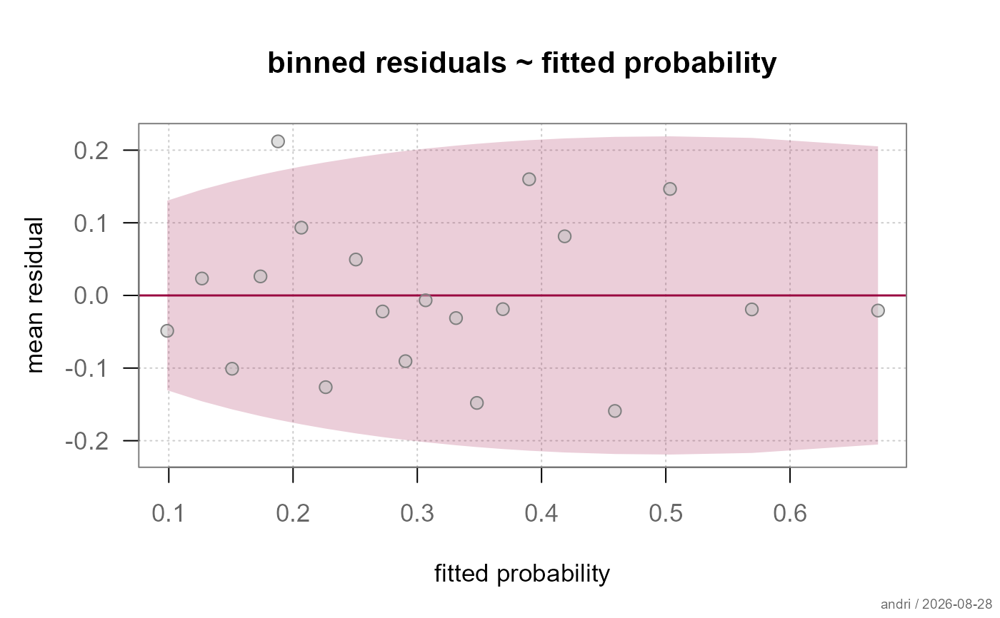
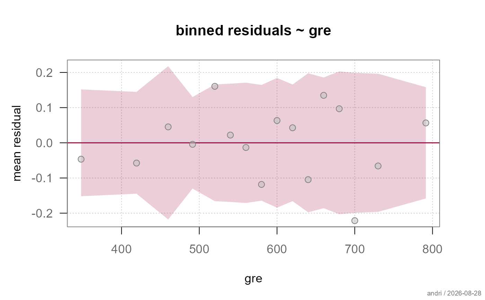

Plots the mean response residual within bins of the fitted probabilities or of a single predictor, together with a pointwise band under the fitted model. This is the workhorse diagnostic for a binary response, where a plain residual-versus-fitted plot only shows the two trivial curves \(-p\) and \(1 - p\).
Usage
plotBinnedResid(
x,
var = NULL,
main = NULL,
xlab = NULL,
ylab = NULL,
xlim = NULL,
ylim = NULL,
nBins = NULL,
conf.level = 0.95,
method = c("model", "empirical"),
col = .useTheme,
bg = .useTheme,
pch = .useTheme,
cex = .useTheme,
border = NA,
grid = .useTheme,
box = .useTheme,
labels = FALSE,
stamp = .useTheme,
...
)Arguments
- x
a fitted logistic model of class
"FitMod"(fitted withfitfn = "logit") or a binomialglm.- var
the binning variable.
NULL(default) bins by the fitted probabilities; a character string names a variable in the model frame; a numeric or factor vector of length \(n\) is used directly.- main
main title.
NULL(default) derives one fromvar;"",NAorFALSEsuppress it.- xlab, ylab
axis labels.
NULLderives them from the binning variable.- xlim, ylim
axis limits.
NULL(default) uses the range of the binned values and of the band.- nBins
number of bins.
NULL(default) uses \(\lfloor\sqrt{n}\rfloor\) for \(n \geq 100\), 10 for \(10 < n < 100\) and \(n/2\) below that. Ignored for a factor.- conf.level
level of the pointwise band. Default
0.95.- method
standard error of the band,
"model"(default) or"empirical". See Details.- col, bg, pch, cex
point colour, fill, symbol and size.
.useTheme(default) resolves against the active theme.- border
colour of the band border.
NA(default) draws none.- grid, box
background grid and plot box, following the flexible
TRUE/FALSE/NA/list()pattern.- labels
bin labels for points falling outside the band.
FALSE(default) draws none,TRUElabels them with the bin range, a named list is passed toboxedText.- stamp
corner stamp, passed to the graphics framework.
- ...
further graphical parameters passed to
par()via the internal framework.
Value
invisibly, the binnedResid table: one row per bin
with the columns bin, x, y (the mean residual),
n, se and the band bounds lci and uci.
Details
Observations are grouped into bins of roughly equal size (quantiles of
the binning variable), and each bin contributes one point: the mean of
the binning variable against the mean residual \(y - \hat p\). Under
a correct model the mean residual in a bin is centred at zero with
standard error \(\sqrt{\overline{p(1-p)/m}/n_b}\), and roughly
conf.level of the points should fall inside the band.
What the plot shows is not scatter but shape. A run of points
outside the band on one side, or a systematic curve across the range,
is the signature of a missing term or a wrong functional form - which
is why the same plot against each continuous predictor
(var = "age") is worth more than the one against the fitted
values: it says where the model is wrong, not just that
it is.
A factor passed as var is grouped by its levels rather than by
quantiles, giving one point per level.
method controls the band only:
"model"binomial standard error implied by the fitted probabilities. Exact under the model and usable in small bins.
"empirical"standard error from the spread within the bin. Assumes nothing about the model, but needs bins large enough to estimate a variance.
References
Gelman, A. and Hill, J. (2007) Data Analysis Using Regression and Multilevel/Hierarchical Models. Cambridge University Press, ch. 5.
See also
binnedResid for the numbers without a plot and for
several predictors at once; model-diagnostics-overview for an overview
of the diagnostics for logistic models in alloy.
Examples
fitLogit <- fitMod(admit ~ gre + gpa + rank, Admit, fitfn = "logit")
plotBinnedResid(fitLogit)

# against a single predictor - this is where a wrong functional form shows
plotBinnedResid(fitLogit, var = "gre")
#> Warning: only 16 distinct bins could be formed instead of the requested 20

# one panel per predictor: compute once, then facet with free x scales
bins <- binnedResid(fitLogit, var = predictors(fitLogit))
#> Warning: only 16 distinct bins could be formed instead of the requested 20
#> Warning: only 19 distinct bins could be formed instead of the requested 20
plotFacet(bins, dim = c(1, 3), panelFun = panelBinnedResid,
xlim = lapply(bins, function(b) range(b$x)),
ylim = range(unlist(lapply(bins, function(b) c(b$lci, b$uci)))),
stripLabels = vars, ylab = "mean residual")
#> Error in plotFacet(bins, dim = c(1, 3), panelFun = panelBinnedResid, xlim = lapply(bins, function(b) range(b$x)), ylim = range(unlist(lapply(bins, function(b) c(b$lci, b$uci)))), stripLabels = vars, ylab = "mean residual"): could not find function "plotFacet"